Mi organización
12Tareas
4En proceso
8Completadas
● Proyecto de programación
● Estudiar para examen
● Entregar documentación
TaskMaster es un sistema de organización desarrollado para facilitar la planificación y el seguimiento de actividades personales y académicas desde un mismo lugar.
● Proyecto de programación
● Estudiar para examen
● Entregar documentación
TaskMaster tiene como propósito desarrollar un sistema de escritorio que facilite la organización y administración de actividades personales y académicas. Permite registrar tareas, consultar actividades mediante un calendario, escribir notas y establecer metas personales.
El proyecto está pensado principalmente para estudiantes y personas que necesitan administrar diferentes actividades y llevar un control de sus pendientes. La información se almacena en MySQL para conservar los registros.
Las actividades pueden encontrarse dispersas entre cuadernos, aplicaciones, notas del teléfono o recordatorios. TaskMaster busca centralizar esa información para facilitar la planificación y el seguimiento.
Tareas, notas, metas y fechas en un mismo sistema.
Información estructurada y asociada a cada usuario.
Control del estado de tareas y progreso de metas.
Desarrollar un Sistema de Organización de Tareas que permita a los usuarios administrar, planificar y dar seguimiento a sus actividades personales, académicas y laborales mediante una plataforma digital eficiente, intuitiva y segura, contribuyendo a mejorar la productividad y la gestión del tiempo.
Diseñar una interfaz gráfica que facilite la interacción y proporcione una experiencia sencilla y eficiente.
Implementar inicio de sesión y control de acceso para mantener asociada la información con cada cuenta.
Permitir crear, consultar, modificar y eliminar tareas según las necesidades del usuario.
Integrar calendario, notas y metas para complementar la planificación.
Ingreso mediante datos registrados y asociación de información con la cuenta.
Pantalla principal desde donde se accede a los módulos.
Registrar, consultar, actualizar y eliminar tareas con título, descripción, fecha, prioridad y estado.
Visualizar y organizar actividades de acuerdo con sus fechas.
Crear, guardar, consultar y eliminar información personal importante.
Registrar objetivos, descripción, fecha límite y porcentaje de progreso.
Consultar y administrar la información relacionada con la cuenta.
Conservar registros mediante MySQL y permitir operaciones CRUD.
Gestiona actividades con prioridad, fecha límite, descripción y estados pendiente, en proceso o completada.
Consulta las fechas de las actividades y facilita la planificación de pendientes.
Guarda recordatorios, ideas e información relacionada con tareas.
Define objetivos, fechas límite y porcentajes de progreso.
Consulta y administra la información básica de la cuenta.
Java se comunica con MySQL mediante JDBC para almacenar y consultar información.
Interacción visual con los módulos.
Procesa registrar, consultar, modificar y eliminar.
Comunicación entre Java y la base de datos.
Almacena permanentemente los registros.
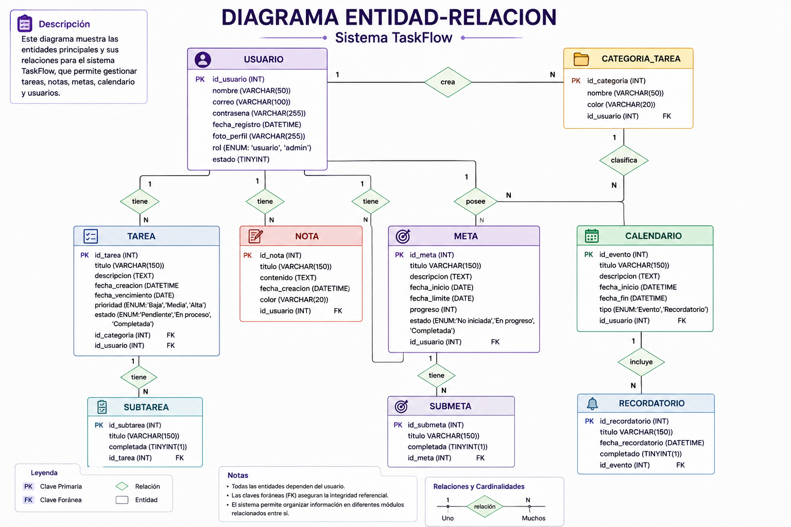
Modelo Entidad-Relación utilizado para representar la estructura de datos.
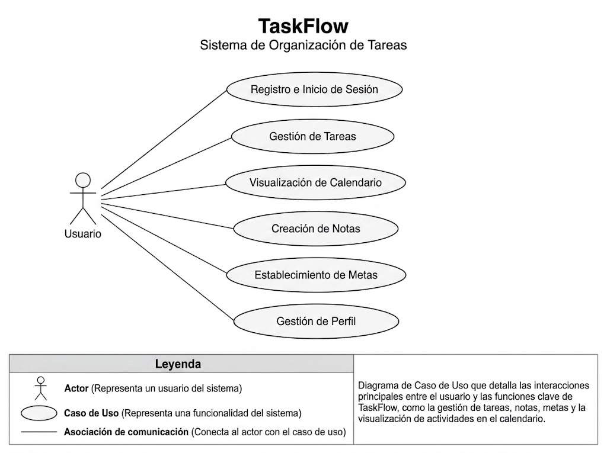
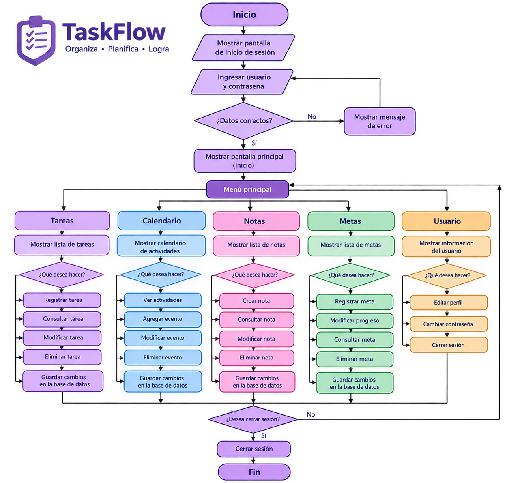
Representación de los casos de uso y la estructura de clases del sistema.
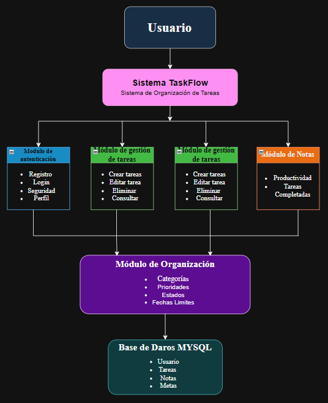
Representa visualmente el flujo general de las operaciones del sistema.
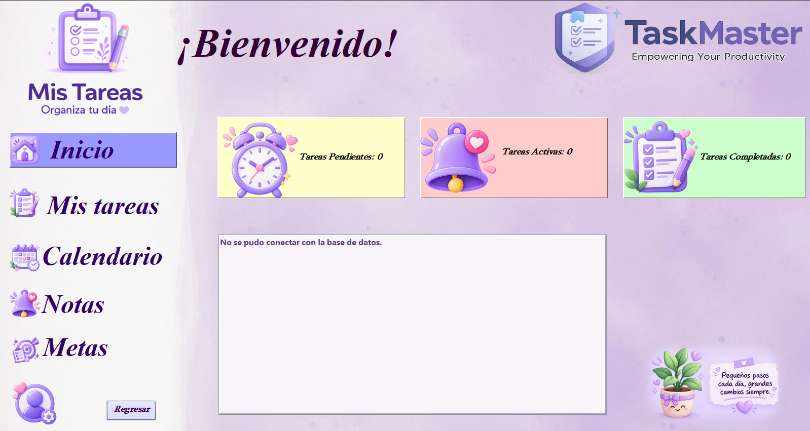
Vista de referencia de la interfaz principal y sus módulos.
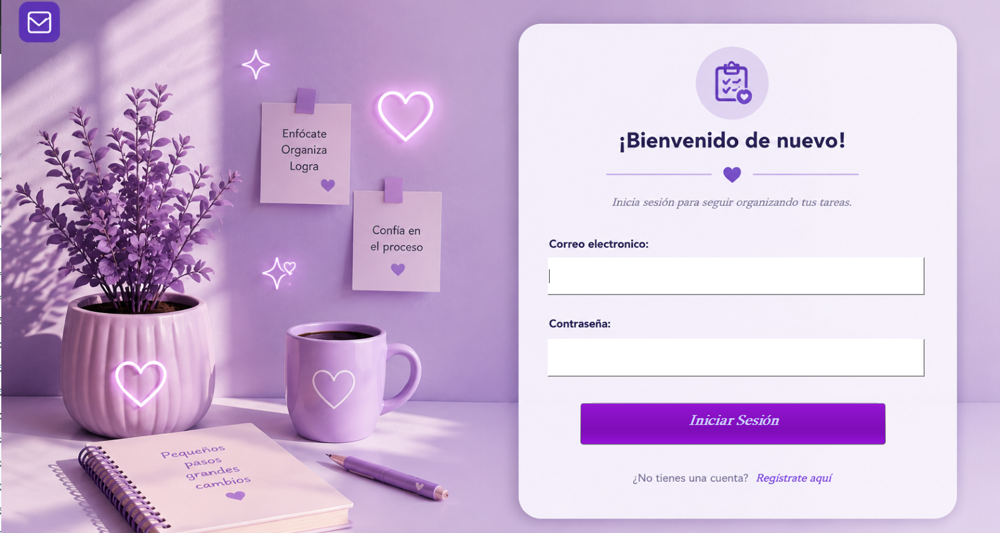
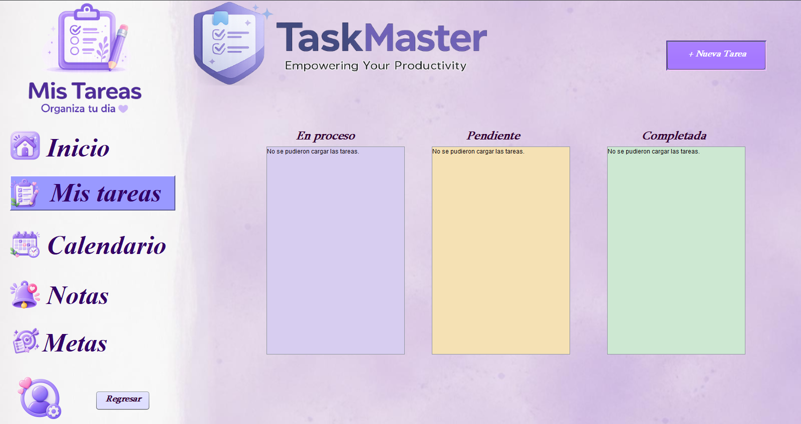
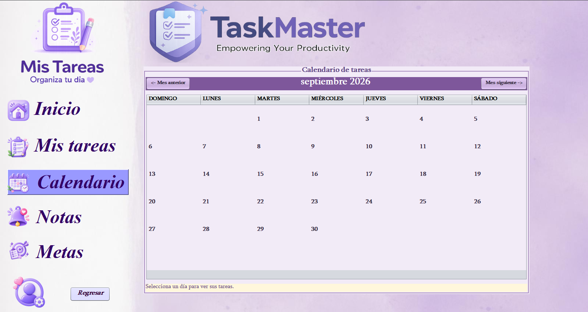
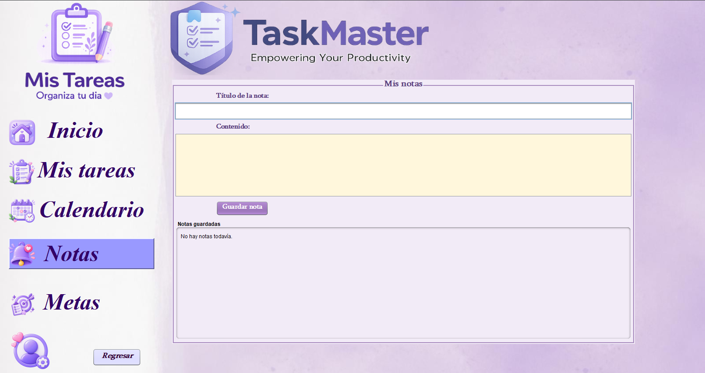
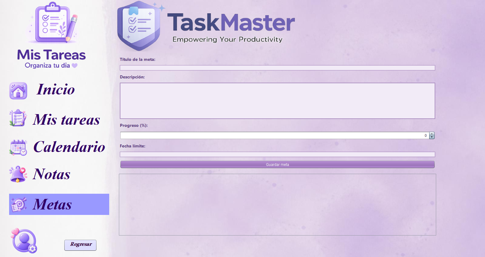
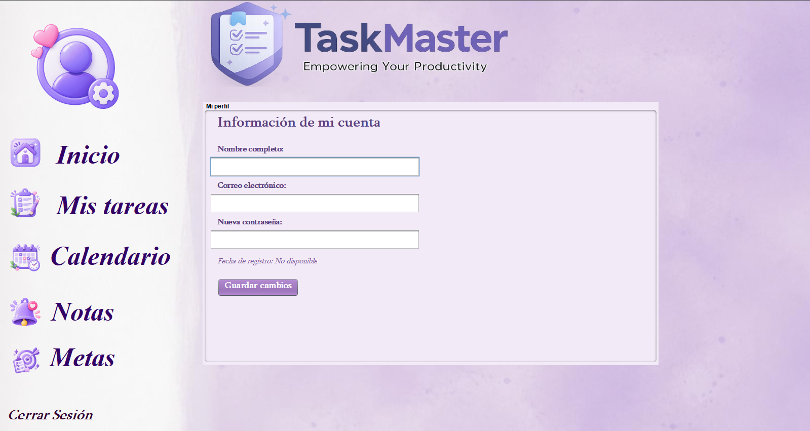
La página web utiliza HTML, CSS y JavaScript únicamente para presentar el proyecto en Internet; el sistema informático documentado utiliza Java, Java Swing, MySQL y JDBC.
TaskMaster ha sido desarrollado considerando la posibilidad de crecimiento y mejora continua. La arquitectura modular permite incorporar nuevas funcionalidades sin modificar completamente los módulos existentes.
Entre las ampliaciones contempladas se encuentran recordatorios automáticos, notificaciones, estadísticas de productividad, historial de actividades, categorías personalizadas, sincronización con servicios en línea, generación de reportes y seguimiento más detallado de metas.
01 · Recordatorios y notificaciones
02 · Estadísticas de productividad
03 · Historial de actividades
04 · Reportes y categorías
05 · Sincronización en línea
Establecimiento: Escuela “Marion G. Bock”
Carrera: 6°. Perito en Desarrollo de Contenido Digital y Software
Ciclo escolar: 2026
Proyecto: TaskMaster — Sistema de Organización de Tareas